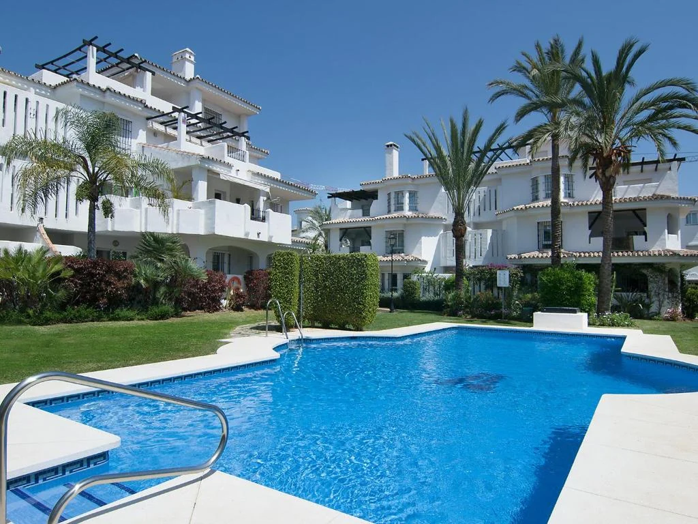
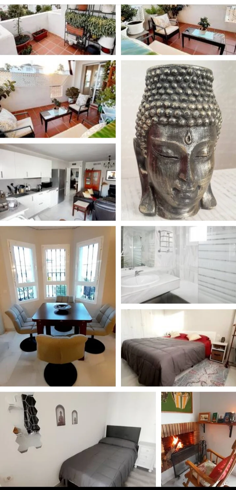
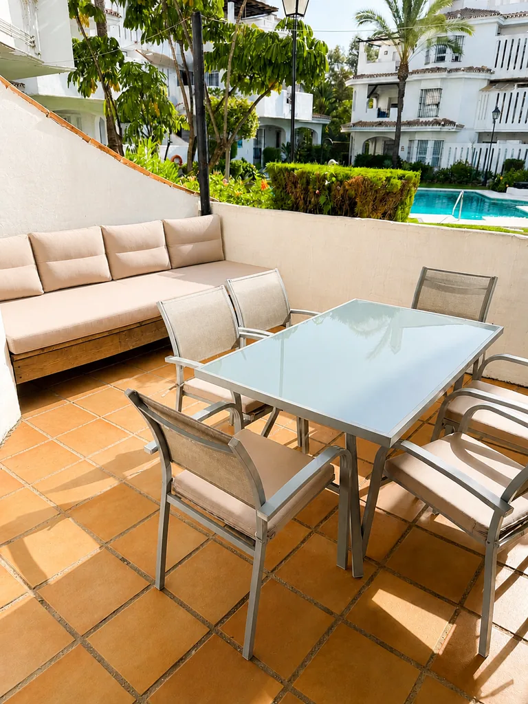
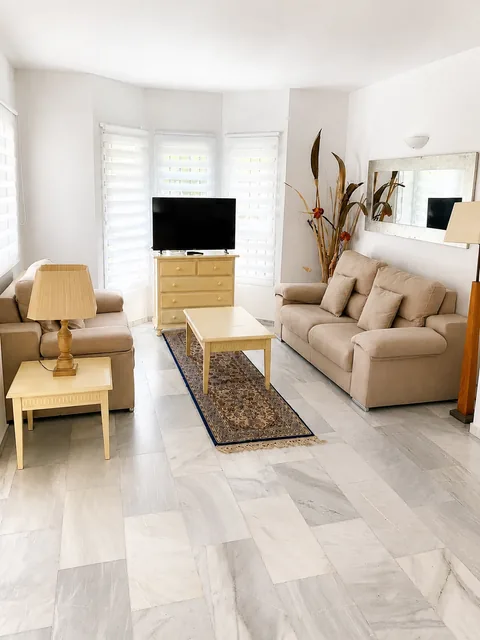
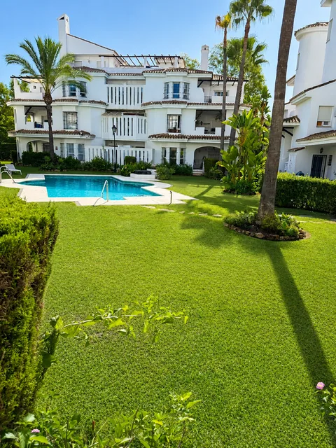

En venta
En venta
Málaga · Marbella
Propiedades
en venta y alquiler.
Una selección breve y transparente de activos comercializados y operaciones de alquiler gestionadas.
Ver listings ↓Selección actual
Cada inmueble,
en su estado real.
Los inmuebles se presentan agrupados por localidad. Cada ficha mantiene visible su condición de venta, alquiler disponible o referencia ya gestionada.
Operación
Ventas
2 propiedades
En venta
 En venta
En venta
La Malagueta · Málaga
Fernando Camino 15
125,97 m² construidos2 unidadesLicencia turística
850.000 €Ver propiedad →
Aviso sobre las imágenes: el mobiliario y la decoración de las propiedades en venta pueden haber sido retocados o recreados mediante home staging virtual con fines comerciales y de interiorismo y no forman parte necesariamente de la venta.
Operación
Alquileres
0 propiedadesActualmente no hay alquileres publicados en Málaga.
Operación
Ventas
1 propiedad En venta
En venta
Los Naranjos de Marbella · Planta baja
Apartamento de 2 dormitorios
129,18 m² construidos2 dormitorios2 bañosLicencia turística
390.000 €Ver propiedad →
Aviso sobre las imágenes: el mobiliario y la decoración de las propiedades en venta pueden haber sido retocados o recreados mediante home staging virtual con fines comerciales y de interiorismo y no forman parte necesariamente de la venta.
Operación
Alquileres
3 propiedades

 Alquilado hasta 2027
Alquilado hasta 2027
Los Naranjos de Marbella · Fase 4
Apartamento en primera planta
106 m²2 dormitorios2 baños21 m² de terrazas
Referencia de alquiler gestionado. El inmueble no está disponible actualmente.
No disponibleVer referencia →


Verano · Por mesesLos Naranjos de Marbella · Fase 4
Ático dúplex para estancias de verano
2 dormitorios1 bañoAire acondicionado3 terrazas
Alquiler por meses durante la temporada de verano. Disponibilidad y condiciones bajo consulta.
Alquiler mensualConsultar disponibilidad →



Fuera de mercadoLos Naranjos de Marbella · Planta baja
Alquiler de temporada con terraza privada
3 dormitorios2 bañosHasta 6 personasPiscina
Alquiler de temporada retirado del mercado. Ficha conservada únicamente como referencia.
Fuera de mercadoVer ficha →
Contacto directo
¿Busca comprar, vender o alquilar?
Cuénteme qué tipo de inmueble y ubicación le interesan para revisar las oportunidades que encajen.
Escribir por WhatsAppAl contactar, sus datos se usarán para atender la consulta. Más información sobre privacidad.